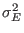
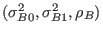
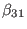

Next: 臨床試験への混合効果モデル：ロジスティック回帰モデル Up: 経時的繰り返し測定デザイン Previous: 分散分析モデルから混合効果モデルへ
まずは，データの読み込みとロングフォーマットへの整形。 ロングフォーマットへの整形は，Rの関数reshape()で実行できる。
なお，整形後のデータについては，
> ### 第7章：臨床試験への混合効果モデル：正規線形回帰モデル
> # 表7.1のデータ
> data("BtheB", package="HSAUR")
> data7.1 <- BtheB; rm(BtheB)
> head(data7.1)
drug length treatment bdi.pre bdi.2m bdi.4m bdi.6m bdi.8m
1 No >6m TAU 29 2 2 NA NA
2 Yes >6m BtheB 32 16 24 17 20
3 Yes <6m TAU 25 20 NA NA NA
4 No >6m BtheB 21 17 16 10 9
5 Yes >6m BtheB 26 23 NA NA NA
6 Yes <6m BtheB 7 0 0 0 0
>
> # 表7.1のデータを表7.2のロングフォーマットに変換
> data7.1$subject <- as.numeric(row.names(data7.1))
> nobs <- nrow(data7.1)
> data7.2 <- reshape(data7.1, idvar="subject",
+ varying=c("bdi.pre","bdi.2m","bdi.4m","bdi.6m","bdi.8m"),
+ direction="long")
> data7.2$visit <- rep(c(0,2,4,6,8), rep(nobs,5))
> data7.2$drug <- as.numeric(data7.2$drug=="Yes")
> data7.2$length <- as.numeric(data7.2$length==">6m")
> data7.2$treatment <- as.numeric(data7.2$treatment=="BtheB")
> data7.2 <- data7.2[,-5]
> data7.2 <- data7.2[order(x=data7.2$subject),]
> row.names(data7.2) <- seq(1,nobs*5,1)
> head(data7.2, n=10)
drug length treatment subject bdi visit
1 0 1 0 1 29 0
2 0 1 0 1 2 2
3 0 1 0 1 2 4
4 0 1 0 1 NA 6
5 0 1 0 1 NA 8
6 1 1 1 2 32 0
7 1 1 1 2 16 2
8 1 1 1 2 24 4
9 1 1 1 2 17 6
10 1 1 1 2 20 8
以下の図は，各個人の反応プロファイルを群ごとに色分けして示したもの。
欠測のメカニズムがMARである限り，尤度に基づく解析では欠測メカニズムを無視できる。
ただし， は共変量ベクトルであり，
は共変量ベクトルであり，

とする。 これは，複合対称性を仮定したモデルに他ならない。
ただし，

とする。
これは，明らかに無構造モデルである。
分散共分散行列
について，  ，  が群間で異なると設定するモデルもあり。
> # モデルII
> library(nlme)
> library(multcomp)
> data7.2$post <- as.numeric(data7.2$visit!=0)
> head(data7.2)
drug length treatment subject bdi visit post
1 0 1 0 1 29 0 0
2 0 1 0 1 2 2 1
3 0 1 0 1 2 3 1
4 0 1 0 1 NA 5 1
5 0 1 0 1 NA 8 1
6 1 1 1 2 32 0 0
> fit7.5II <- lme(bdi~drug+length+treatment*visit, data=data7.2, na.action = na.omit,
+ random=list(subject=pdDiag(~1+post))) # 独立を仮定
> summary(fit7.5II)
Linear mixed-effects model fit by REML
Data: data7.2
AIC BIC logLik
2628.098 2686.72 -1299.049
Random effects:
Formula: ~1 + post | subject
Structure: Diagonal
(Intercept) post Residual
StdDev: 8.678929 6.047061 5.141823
Fixed effects: bdi ~ drug + length + treatment * visit
Value Std.Error DF t-value p-value
(Intercept) 21.088261 1.914752 272 11.013575 0.0000
drug 3.921710 2.045169 96 1.917548 0.0581
length 3.754381 1.945105 96 1.930169 0.0565
treatment1 -2.689515 2.100615 96 -1.280346 0.2035
visit2 -4.491750 1.406598 272 -3.193344 0.0016
visit3 -6.107822 1.491920 272 -4.093934 0.0001
visit5 -7.675642 1.573180 272 -4.879062 0.0000
visit8 -10.471545 1.631783 272 -6.417240 0.0000
treatment1:visit2 -3.335173 1.923171 272 -1.734205 0.0840
treatment1:visit3 -3.000558 2.071731 272 -1.448334 0.1487
treatment1:visit5 -2.294237 2.194987 272 -1.045216 0.2969
treatment1:visit8 -0.276918 2.256689 272 -0.122710 0.9024
Correlation:
(Intr) drug length trtmn1 visit2 visit3 visit5 visit8 trt1:2 trt1:3 trt1:5
drug -0.383
length -0.571 0.136
treatment1 -0.432 -0.275 -0.018
visit2 -0.201 0.008 -0.011 0.184
visit3 -0.184 0.005 -0.020 0.174 0.663
visit5 -0.173 0.002 -0.020 0.166 0.629 0.635
visit8 -0.167 0.002 -0.019 0.160 0.606 0.613 0.609
treatment1:visit2 0.147 -0.006 0.008 -0.260 -0.731 -0.485 -0.460 -0.443
treatment1:visit3 0.134 -0.005 0.013 -0.242 -0.477 -0.720 -0.458 -0.441 0.653
treatment1:visit5 0.125 -0.003 0.013 -0.229 -0.451 -0.455 -0.717 -0.436 0.617 0.625
treatment1:visit8 0.122 -0.003 0.011 -0.222 -0.438 -0.443 -0.440 -0.723 0.600 0.608 0.605
Standardized Within-Group Residuals:
Min Q1 Med Q3 Max
-2.45704660 -0.49613860 -0.07318302 0.39930402 3.51956210
Number of Observations: 380
Number of Groups: 100
> cont1 <- matrix(c(0,0,0,0,0,0,0,0,1/4,1/4,1/4,1/4),1)
> meanCFB <- glht(fit7.5II, linfct=cont1)
> summary(meanCFB)
Simultaneous Tests for General Linear Hypotheses
Fit: lme.formula(fixed = bdi ~ drug + length + treatment * visit,
data = data7.2, random = list(subject = pdDiag(~1 + post)),
na.action = na.omit)
Linear Hypotheses:
Estimate Std. Error z value Pr(>|z|)
1 == 0 -2.227 1.783 -1.249 0.212
(Adjusted p values reported -- single-step method)
> # モデルII.B
> # ベースラインを共変量にするため新たな変数として分離
> data7.5 <- data7.2[data7.2$visit!=0,-7]
> data7.5$bdi0 <- rep(data7.2[data7.2$visit==0, 5], each=4)
> head(data7.5)
drug length treatment subject bdi visit bdi0
2 0 1 0 1 2 2 29
3 0 1 0 1 2 3 29
4 0 1 0 1 NA 5 29
5 0 1 0 1 NA 8 29
7 1 1 1 2 16 2 32
8 1 1 1 2 24 3 32
> fit7.5II.B <- lme(bdi~drug+length+bdi0+treatment*visit, data=data7.5, na.action=na.omit,
+ random=~1|subject)
> summary(fit7.5II.B)
Linear mixed-effects model fit by REML
Data: data7.5
AIC BIC logLik
1874.498 1921.229 -924.2489
Random effects:
Formula: ~1 | subject
(Intercept) Residual
StdDev: 7.235249 5.035954
Fixed effects: bdi ~ drug + length + bdi0 + treatment * visit
Value Std.Error DF t-value p-value
(Intercept) 4.794906 2.3116064 177 2.074274 0.0395
drug -2.768131 1.7795471 92 -1.555526 0.1233
length 0.254582 1.6891280 92 0.150718 0.8805
bdi0 0.639741 0.0802142 92 7.975414 0.0000
treatment1 -3.032446 1.8849111 92 -1.608801 0.1111
visit3 -1.590460 1.1684857 177 -1.361130 0.1752
visit5 -3.134647 1.2669005 177 -2.474264 0.0143
visit8 -5.919046 1.3358691 177 -4.430858 0.0000
treatment1:visit3 0.323857 1.6342995 177 0.198163 0.8431
treatment1:visit5 0.972302 1.7818248 177 0.545678 0.5860
treatment1:visit8 2.992397 1.8540355 177 1.613991 0.1083
Correlation:
(Intr) drug length bdi0 trtmn1 visit3 visit5 visit8 trt1:3 trt1:5
drug -0.074
length -0.239 0.158
bdi0 -0.682 -0.236 -0.241
treatment1 -0.425 -0.298 -0.010 0.114
visit3 -0.202 -0.013 -0.041 0.015 0.258
visit5 -0.186 -0.022 -0.044 0.020 0.241 0.447
visit8 -0.173 -0.021 -0.038 0.013 0.229 0.424 0.431
treatment1:visit3 0.147 0.003 0.024 -0.010 -0.341 -0.715 -0.319 -0.303
treatment1:visit5 0.128 0.009 0.024 -0.003 -0.315 -0.317 -0.711 -0.306 0.440
treatment1:visit8 0.124 0.008 0.016 -0.001 -0.302 -0.305 -0.310 -0.720 0.423 0.431
Standardized Within-Group Residuals:
Min Q1 Med Q3 Max
-2.51845659 -0.48526818 -0.08484032 0.39867171 3.63234421
Number of Observations: 280
Number of Groups: 97
> cont1 <- matrix(c(0,0,0,0,1,0,0,0,1/4,1/4,1/4),1)
> meanCFB <- glht(fit7.5II.B, linfct=cont1)
> summary(meanCFB)
Simultaneous Tests for General Linear Hypotheses
Fit: lme.formula(fixed = bdi ~ drug + length + bdi0 + treatment *
visit, data = data7.5, random = ~1 | subject, na.action = na.omit)
Linear Hypotheses:
Estimate Std. Error z value Pr(>|z|)
1 == 0 -1.960 1.746 -1.123 0.262
(Adjusted p values reported -- single-step method)
RMモデルとANCOVAモデルでは，治療効果に相当する母数が異なることに注意。
RMモデルの場合：
ANCOVAモデルの場合：
RMモデルとANCOVAモデルでは，線形対比の構成方法が異なることに注意。
治療期間が4時点あるとすると，これを通じた平均的効果の大きさを求めたい場合，
RMモデルでは
でよいが，
ANCOVAモデルではを考慮しなくてはいけないのに加え，対比を
とする必要がある（母数が3つだからと言って3で割ってはいけない）
治療期間の時点1における効果  はベースライン扱いになるため常に0になり出力はされないが，これも本当は足されなければならない。
Taichi Okumura